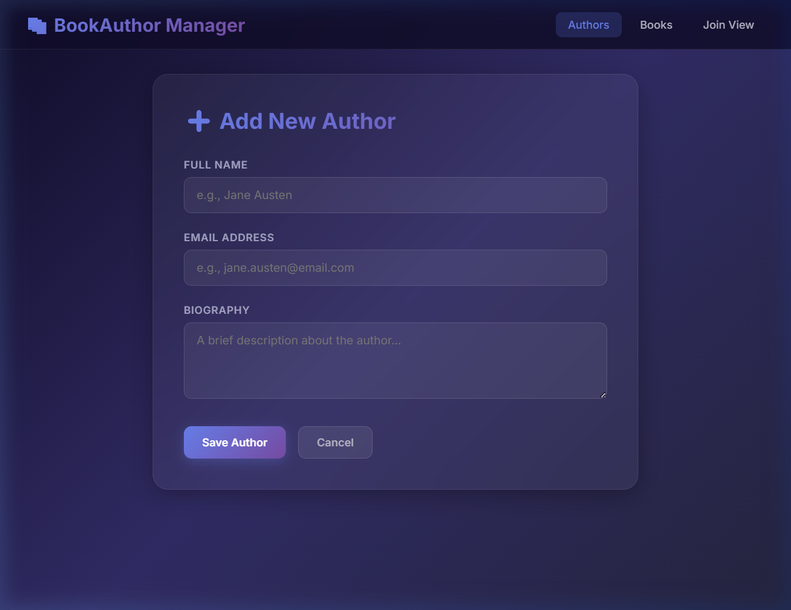
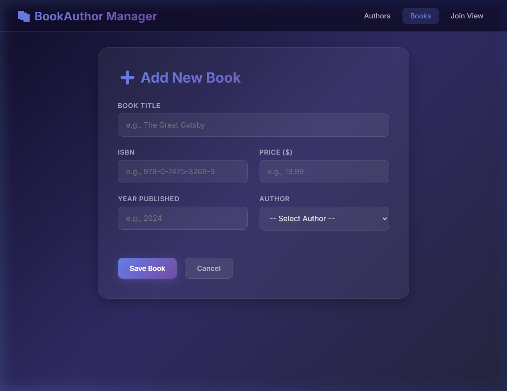
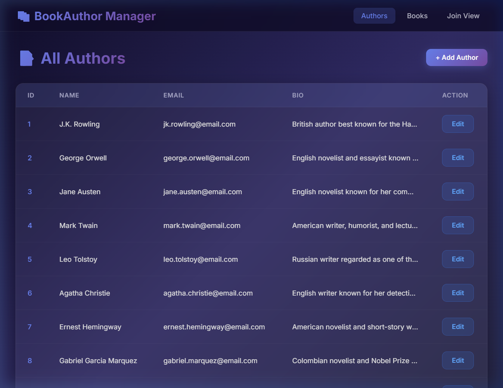
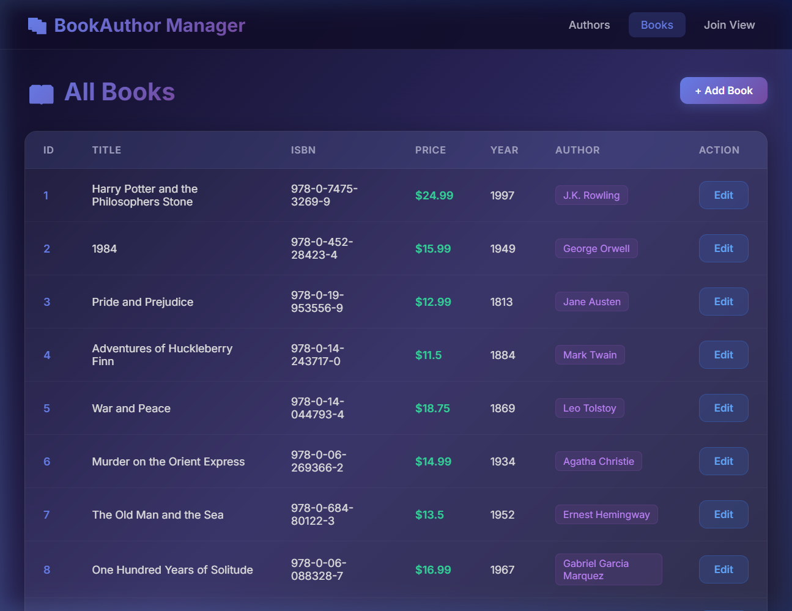
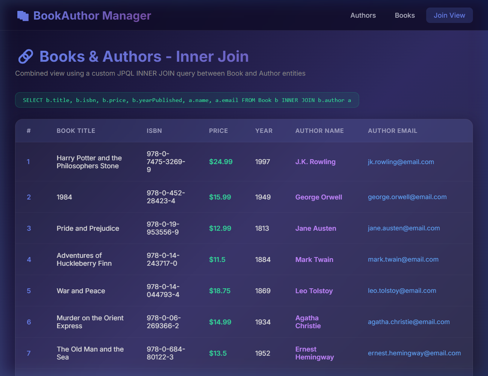
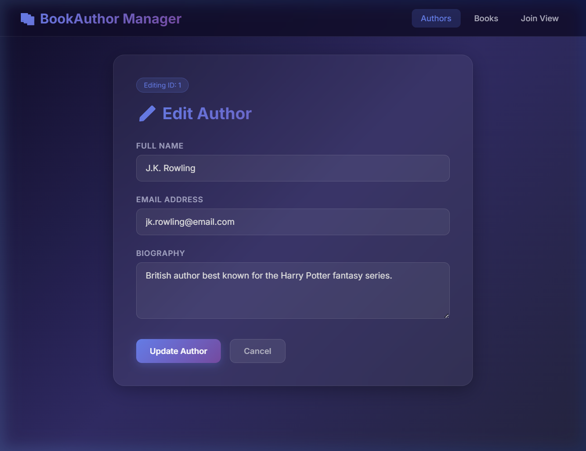
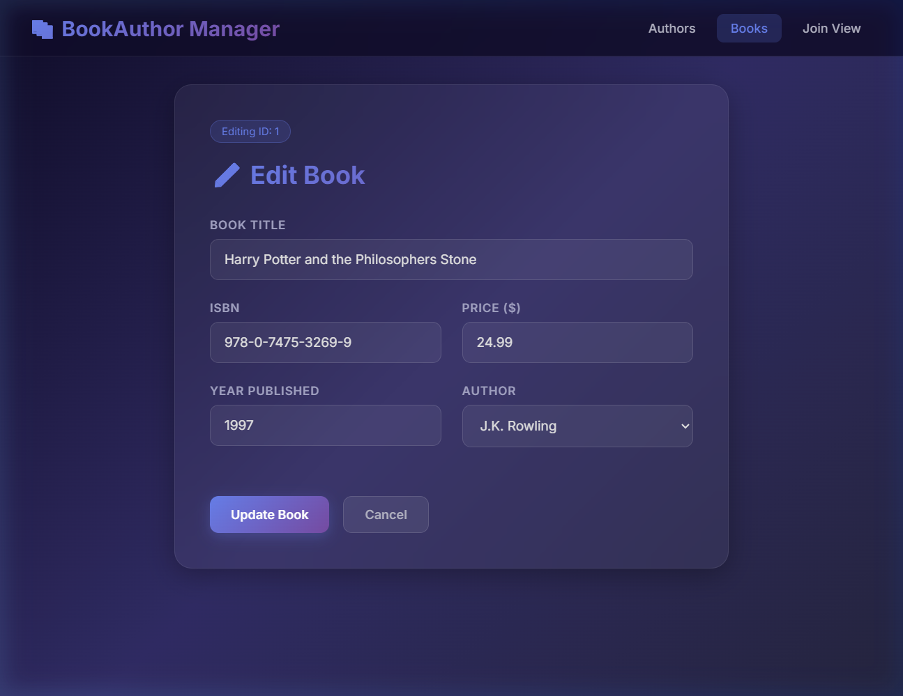

Entities: Books & Authors
The application manages two entities: Author and Book, with a One-to-Many relationship — one author can write many books, and each book belongs to exactly one author.
id : Long (PK, Auto-generated)
name : String (NOT NULL)
email : String (NOT NULL, UNIQUE)
bio : String (max 500 chars)
id : Long (PK, Auto-generated)
title : String (NOT NULL)
isbn : String (NOT NULL, UNIQUE)
price : Double (NOT NULL)
year_published : Integer
author_id : Long (FK → authors.id)
@OneToMany on Author and @ManyToOne + @JoinColumn on Book. Cascade type is ALL — operations on Author cascade to related Books.
| Component | Technology |
|---|---|
| Framework | Spring Boot 2.7.18 |
| Language | Java 8 |
| Build Tool | Maven 3.8.8 |
| Database | H2 (In-memory) |
| ORM | Spring Data JPA / Hibernate 5.6 |
| View Layer | JSP + JSTL + Spring Form Tags |
| Styling | Custom CSS (Dark Theme, Glassmorphism) |
| Testing | JUnit 5 + Mockito |
| Packaging | WAR (required for JSP support) |
BookAuthorApp/
├── pom.xml
├── src/main/java/com/bookauthor/app/
│ ├── BookAuthorApplication.java
│ ├── model/ Author.java, Book.java
│ ├── dto/ BookAuthorDTO.java
│ ├── repository/ AuthorRepository.java, BookRepository.java
│ ├── service/ AuthorService.java, BookService.java
│ └── controller/ AuthorController.java, BookController.java, HomeController.java
├── src/main/resources/
│ ├── application.properties
│ └── data.sql
├── src/main/webapp/WEB-INF/jsp/
│ ├── authors/ list.jsp, add.jsp, edit.jsp
│ └── books/ list.jsp, add.jsp, edit.jsp, joinview.jsp
└── src/test/java/com/bookauthor/app/
├── repository/ AuthorRepositoryTest.java, BookRepositoryTest.java
└── service/ AuthorServiceTest.java, BookServiceTest.java
@Entity
@Table(name = "authors")
public class Author {
@Id
@GeneratedValue(strategy = GenerationType.IDENTITY)
private Long id;
@NotBlank(message = "Name is required")
@Column(nullable = false)
private String name;
@NotBlank @Email
@Column(nullable = false, unique = true)
private String email;
@Size(max = 500)
@Column(length = 500)
private String bio;
@OneToMany(mappedBy = "author", cascade = CascadeType.ALL, fetch = FetchType.LAZY)
private List<Book> books = new ArrayList<>();
// Getters, Setters, Constructors...
}
@Entity
@Table(name = "books")
public class Book {
@Id
@GeneratedValue(strategy = GenerationType.IDENTITY)
private Long id;
@NotBlank @Column(nullable = false)
private String title;
@NotBlank @Column(nullable = false, unique = true)
private String isbn;
@NotNull @DecimalMin("0.0")
@Column(nullable = false)
private Double price;
@Min(1000) @Max(2030)
@Column(name = "year_published")
private Integer yearPublished;
@ManyToOne(fetch = FetchType.LAZY)
@JoinColumn(name = "author_id", nullable = false)
private Author author;
// Getters, Setters, Constructors...
}
@Repository
public interface AuthorRepository extends JpaRepository<Author, Long> {
Author findByEmail(String email);
}
@Repository
public interface BookRepository extends JpaRepository<Book, Long> {
@Query("SELECT new com.bookauthor.app.dto.BookAuthorDTO(" +
"b.title, b.isbn, b.price, b.yearPublished, a.name, a.email) " +
"FROM Book b INNER JOIN b.author a")
List<BookAuthorDTO> findAllBooksWithAuthors();
Book findByIsbn(String isbn);
}
@Query performs an INNER JOIN between Book and Author, returning results as a BookAuthorDTO projection object.@Service
public class AuthorService {
private final AuthorRepository authorRepository;
public List<Author> findAll() { return authorRepository.findAll(); }
public Optional<Author> findById(Long id) { return authorRepository.findById(id); }
public Author save(Author author) throws DataIntegrityViolationException {
return authorRepository.save(author);
}
public Author update(Long id, Author updatedAuthor) {
Author existing = authorRepository.findById(id)
.orElseThrow(() -> new RuntimeException("Author not found"));
existing.setName(updatedAuthor.getName());
existing.setEmail(updatedAuthor.getEmail());
existing.setBio(updatedAuthor.getBio());
return authorRepository.save(existing);
}
}
// BookService follows the same pattern + getBooksWithAuthors()
@Controller @RequestMapping("/authors")
public class AuthorController {
@GetMapping // List all authors
public String listAuthors(Model model) { ... }
@GetMapping("/add") // Show add form
@PostMapping("/add") // Handle add submission (with validation)
@GetMapping("/edit/{id}") // Show edit form
@PostMapping("/edit/{id}") // Handle update (with DataIntegrityViolationException)
}
@Controller @RequestMapping("/books")
public class BookController {
// Same CRUD endpoints + GET /books/join for inner join view
}
All JSP pages use JSTL (<c:forEach>, <c:if>) and Spring Form Tags (<form:input>, <form:errors>) for data binding. Custom CSS provides a premium dark theme with glassmorphism effects, gradient backgrounds, and smooth hover animations.
Tables are created automatically by Hibernate (spring.jpa.hibernate.ddl-auto=create). Sample data is loaded from data.sql:
-- 10 Authors
INSERT INTO authors (name, email, bio) VALUES ('J.K. Rowling', 'jk.rowling@email.com', '...');
INSERT INTO authors (name, email, bio) VALUES ('George Orwell', 'george.orwell@email.com', '...');
-- ... (8 more authors)
-- 10 Books (each linked to an author via author_id)
INSERT INTO books (title, isbn, price, year_published, author_id)
VALUES ('Harry Potter and the Philosophers Stone', '978-0-7475-3269-9', 24.99, 1997, 1);
INSERT INTO books (title, isbn, price, year_published, author_id)
VALUES ('1984', '978-0-452-28423-4', 15.99, 1949, 2);
-- ... (8 more books)
Users can add new Authors and Books via JSP forms. The controller validates input using @Valid and catches DataIntegrityViolationException for duplicate email/ISBN violations.

Figure: Add Author Form

Figure: Add Book Form (with Author dropdown)
The list views display all entities in styled tables. The Join View executes the custom INNER JOIN query.

Figure: Authors List (10 rows from sample data)

Figure: Books List with Author badges

Figure: Inner Join View — JPQL query shown at top
Edit forms are pre-populated with existing data. The Author dropdown in book edit pre-selects the current author.

Figure: Edit Author (pre-populated with J.K. Rowling's data)

Figure: Edit Book (pre-populated with author selection)
Unit tests were written using JUnit 5 and Mockito. All 25 tests pass.
| Test Class | Tests | Coverage |
|---|---|---|
| AuthorRepositoryTest | 6 tests | save, findAll, findById, findByEmail, update, findByEmail_NotFound |
| BookRepositoryTest | 6 tests | save, findAll, findById, findByIsbn, update, findAllBooksWithAuthors (inner join) |
| AuthorServiceTest | 6 tests | findAll, findById_Found, findById_NotFound, save, update_Success, update_NotFound |
| BookServiceTest | 7 tests | findAll, findById_Found, findById_NotFound, save, update_Success, update_NotFound, getBooksWithAuthors |
[INFO] Tests run: 6, Failures: 0, Errors: 0 - AuthorRepositoryTest [INFO] Tests run: 6, Failures: 0, Errors: 0 - BookRepositoryTest [INFO] Tests run: 6, Failures: 0, Errors: 0 - AuthorServiceTest [INFO] Tests run: 7, Failures: 0, Errors: 0 - BookServiceTest [INFO] Results: [INFO] Tests run: 25, Failures: 0, Errors: 0, Skipped: 0 [INFO] BUILD SUCCESS
@Test
public void testFindAllBooksWithAuthors_InnerJoin() {
Author author1 = createTestAuthor("Join Author1", "join1@email.com");
Author author2 = createTestAuthor("Join Author2", "join2@email.com");
entityManager.persist(new Book("Join Book1", "978-1-5555-5555-1", 12.0, 2019, author1));
entityManager.persist(new Book("Join Book2", "978-1-6666-6666-1", 18.0, 2020, author2));
entityManager.flush();
List<BookAuthorDTO> results = bookRepository.findAllBooksWithAuthors();
assertTrue(results.size() >= 2);
assertEquals("Join Author1", results.get(0).getAuthorName());
}
Authors List Page
Books List Page
Inner Join View
| Challenge | Solution |
|---|---|
| No JDK installed — Only JRE 1.8 was available, no compiler | Discovered an OpenJDK 8 bundled with Android SDK at C:\Program Files\Android\jdk\ and configured JAVA_HOME |
| No Maven installed — Build tool not in PATH | Downloaded Maven 3.8.8 portable distribution and configured it in the project wrapper script |
| JSP 404 errors — JSP pages not found at runtime | Ensured WAR packaging in pom.xml and correct directory structure under src/main/webapp/WEB-INF/jsp/ |
| Data binding for author selection — Book form needed author dropdown | Used native HTML <select> with JSTL <c:forEach> and @RequestParam("authorId") in controller |
| Integrity violation handling — Duplicate email/ISBN errors | Wrapped save/update in try-catch for DataIntegrityViolationException, displaying user-friendly error messages |
| Lazy loading in JSP — Author name in book list caused LazyInitializationException | Kept spring.jpa.open-in-view=true (Spring Boot default) to allow lazy loading during view rendering |
Repository URL: (To be added after pushing to GitHub)
git init && git add . && git commit -m "Initial commit" && git remote add origin <URL> && git push -u origin mainGenerated for Spring Boot CRUD Assignment — BookAuthor Management Application